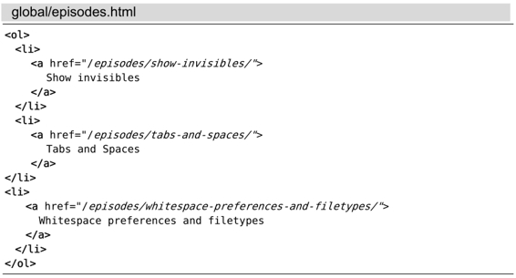

技巧98删除所有包含模式的文本行
将:global命令与:delete命令一起组合使用，可以快速地裁剪文件内容。对于那些匹配{pattern}的文本行，我们既可以选择保留，也可以将其丢弃。
以下内容取自Vimcasts.org归档网页中有关前几部主题的链接：

显而易见，所有列表项均由两部分数据构成：主题的标题及其URL。接下来，我们将利用一条:global命令分别取出这两组数据。
用 ':g/re/d' 删除所有的匹配行
如果我们只想保留<a>标签内的标题，而把其他行删掉，该怎么做呢？在本例中，由于每组链接的内容各占一行，而其他文本行只包含或开或闭这两种类型的标签，因此，如果我们设计一个可以匹配HTML标签的模式，再用它进行:global命令调用，就可以删掉所有该模式的匹配行了。
以下命令可以做到这一点：
➾ /\v\<\/?\w+>
➾ :g//d
如果我们在Vimcasts.org的归档文件中运行这两条命令，文件的内容将会变为：
与:substitute命令类似，我们也可以将 :global命令的查找域留空。这样一来，Vim将会重用最后一次的查找模式（参见技巧90）。这意味着在我们构造正则表达式的过程中，可以先进行粗粒度匹配，然后再对其进行精细调整，正如技巧85所展示的那样。
本例的正则表达式采用的是very magic模式（在技巧73中有所涉及）。首先，它会匹配左尖括号（\<）；然后，匹配可选的正斜杠（\/?）；接下来，再匹配一个或多个单词型字符（\w+）；最后匹配表示单词结尾的分隔符（>）。尽管这个正则表达式并不能匹配所有的标签，但对于这个特定的例子来说，已经够用了。
Grep一词的来历
请仔细琢磨一下:global命令的简写形式：
➾ :g/re/p
re表示regular expression，而p是:print的缩写，它作为缺省的[cmd] 使用。如果我们把符号 / 忽略掉，便会发现单词“grep”已然呼之欲出了。
用 ':v/re/d' 只保留匹配行
这一次，我们将进行相反的操作。正如我们前面提到的，:vglobal或简写的:v命令，恰好与:g命令的操作相反。也就是说，它用于在指定模式的非匹配行上执行Ex命令。
在本例中，包含URL的文本行很容易识别，它们都含有href属性。因此，通过运行以下命令，我们就可以得到这些文本行。
➾:v/href/d
以上命令可以被解读为“删除所有不包含href的文本行”。最终的结果如下所示：
仅仅凭借一条命令，整篇文档就被精炼为我们感兴趣的文本段了。